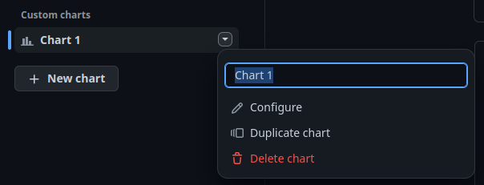

Gráficos de proyectos en GitHub Projects
GitHub Projects permite la creación de gráficos con los que presentar los datos de los ítems gráficamente en forma de barras, columnas o líneas. Vamos a ver cómo podemos trabajar con ellos. Son una herramienta bastante útil que ayuda a extraer información de manera visual muy fácilmente.
Al finalizar, sabrá:
-
Qué es un gráfico.
-
Cómo visualizar los gráficos.
-
Cómo crear gráficos personalizados.
Introducción
La idea de los gráficos (charts) es proporcionar conocimiento mediante la elaboración de gráficos con información extraída de los ítems de un proyecto. GitHub Projects proporciona diversos tipos de gráficos:
-
De barras (bar)
-
De columnas (column)
-
De línea (line)
Podemos seleccionar qué columna del tablero ubicar en el eje X y qué cálculo realizar con los ítems en el Y. En este segundo eje, podemos indicar:
-
Cuenta de ítems.
-
Suma de un campo numérico.
-
Cálculo del promedio de un campo numérico.
-
Mínimo valor de un campo.
-
Máximo valor de un campo.
También nos permite realizar agrupaciones de ítems por el valor de un determinado campo.
En el siguiente ejemplo, podemos ver un gráfico que filtra los ítems con el valor 2023/B1 para el campo when y muestra cuántos ítems se encuentran en cada estatus:
Visualización de gráficos
En primer lugar, vamos a ver cómo llegar a los gráficos.
En el proyecto, en la barra donde se encuentran los tres puntos (...) se observa un botón con un gráfico de línea, Insights, no hay más que hacer clic en él:

De manera predeterminada, el proyecto viene con un gráfico de estatus como el que vimos en el ejemplo anterior. Si hacemos clic en el botón Configure, podemos seleccionar los distintos elementos del gráfico:
Gráficos personalizados
Un gráfico personalizado (custom chart) es aquel que creamos nosotros para atender una determinada necesidad. En el primer ejemplo, observemos que podemos filtrar sólo determinados ítems como, por ejemplo, los de una determinada iteración o sprint; o en caso de no necesitarlo, seleccionar todos los ítems del proyecto.
Creación de gráfico personalizado
Vamos a ver cómo crear un gráfico personalizado de barras para mostrar cuántos ítems se han asociado a cada repositorio del proyecto:
-
Ir al proyecto.
-
Hacer clic en el botón Insights (imagen de un gráfico de línea).
-
Hacer clic en + New charts en el lateral izquierdo bajo Custom charts:
-
Esto creará una entrada de gráfico Chart X en la sección Custom charts. Para cambiar su nombre, mostraremos su menú contextual y lo cambiaremos:

Observe que si desea crear un nuevo gráfico a partir de uno existente, no tiene más que elegir Duplicate chart en su menú contextual.
-
Hacer clic en Configure para configurar el gráfico:
Hay que seleccionar:
-
Gráfico de barras mediante Layout > Bar.
-
Campo Repository en el eje X (X-axis).
-
Agregación de cuenta de ítems (Count of items) en el eje Y (Y-axis).
-
-
Tras terminar, hacer clic en Save changes.
Si su proyecto contiene ítems, podrá ver un gráfico de barras. He aquí cómo queda nuestro ejemplo:
Si queremos que sólo se tengan en cuenta ciertos ítems como, por ejemplo, los de una determinada iteración o sprint, lo indicaremos en su filtro. Veamos cómo quedaría en nuestro ejemplo:
No olvide hacer clic en Save changes del filtro si desea mantenerlo porque es el objeto del gráfico.
Supresión de gráfico personalizado
Para suprimir un gráfico personalizado, hacer clic en Delete chart del menú contextual del gráfico.